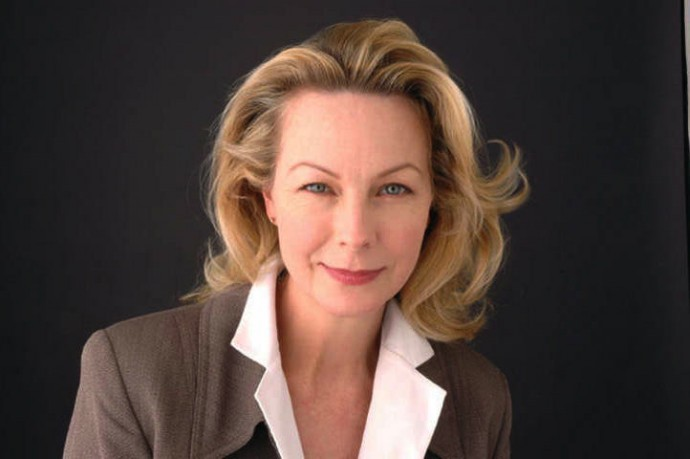
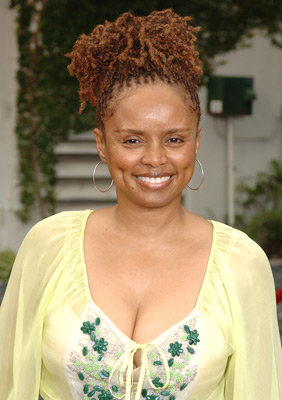

#6654 Perry Mason und die Kunst des Malens
Alternativ: Perry Mason: The Case of the Fatal Framing


 IMDB-Wertung: 6.8 / 10
IMDB-Wertung: 6.8 / 10  Metascore: 0
Metascore: 0 
Das Wiederauftauchen eines todgeglaubten Malers löst nicht nur Freude aus. Bilder toter Meister verkaufen sich nun einmal besser, und auch Fälschungen lassen sich ohne den vorgeblichen Urheber besser in Umlauf bringen. Bald wird der Maler ermordet aufgefunden. Perry Mason verteidigt den dringend Tatverdächtigen.
Jahr: 1992
Dauer: 90 Minuten
FSK:
Land: USA Studio: NBCTonspuren:
Untertitel:
Auflösung: SD (640x484) Größe: 821 MB
Genre: Drama, Krimi, Mystery
Regisseur: Christian I. Nyby II
Drehbuch: Sean Cholodenko
Soundtrack:
Darsteller:
 Raymond Burr als Perry Mason
Raymond Burr als Perry Mason Barbara Hale als Della Street
Barbara Hale als Della Street William R. Moses als Ken Malansky
William R. Moses als Ken Malansky Jane Carr als Renee Nurian
Jane Carr als Renee Nurian-  Maureen Mueller als Lizanne York
 John Rhys-Davies als Phillip Graff
John Rhys-Davies als Phillip Graff- Scott Valentine als Damien Blakely
- David Soul als Truman York
 James McEachin als Lt. Ed Brock
James McEachin als Lt. Ed Brock-  Debbi Morgan als Maureen Gilman
 Mark Moses als Joel McKelvey
Mark Moses als Joel McKelvey- Nancy Valen als Mala Sikorski
- Robert Gentry als Winston Hope
- Betsy Jones-Moreland als Judge Elinor Harrelson
- Charles Macaulay als D.A, Milton Fryman
- Carla Folk als Barbara Scott
- Michael K. Osborn als Dr. Bainsworth
- Ron Pinkard als Lesley
- Dutch Shindler als Elevator Operator
- Kathryn Christopher als Hotel Clerk
- Christina Faust als Diane McKelvey
- Jim Huffman als Man in Gallery
- Vincent C. Robinson als Court Clerk
- Archie Smith als Sculptor
Datei: X:\Person\Perry Mason\Perry Mason und die Kunst des Malens (1992, FSK, 640x484).mkv seit 28.07.2017
Festplatte: HD Collection-7+mehr(A-Z)+Person
 Es gibt insgesamt 20 Filme in der Gruppe 'Person\Perry Mason'
Es gibt insgesamt 20 Filme in der Gruppe 'Person\Perry Mason'